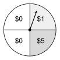
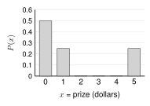

Unit 7 Review
A game booth at the school fair raises money. You pay \(\$2\) to spin this spinner one time. It has 4 equal parts. You win the prize on your part.

Every tool from Unit 7 tells you something about this game. A probability distribution lists the prizes. The expected value shows the average prize. The expected payoff shows if the game is fair.
This review uses all of them. It has every kind of problem on the Unit 7 quiz, with more of each.
random variable, probability distribution, theoretical probability, empirical distribution, expected value, fair game, net gain, expected payoff
Printable review - notes and practice problems to print and write on.
Khan Academy: Unit 7, Lesson 1: Probability distributions introduction; Unit 7, Lesson 2: Theoretical & empirical probability distributions; Unit 7, Lesson 3: Decisions with probability; Unit 7, Lesson 4: Expected value
👥 Learn Together
7.1 - Make the Distribution
Let \(X\) = the prize from one spin, in dollars.
| \(x\) (prize) | 0 | 1 | 5 |
|---|---|---|---|
| \(P(x)\) | \(\frac{2}{4} = \frac{1}{2}\) | \(\frac{1}{4}\) | \(\frac{1}{4}\) |

- Every \(P(x)\) is from 0 to 1.
- The probabilities add to 1: \(\Sigma P(x) = 1\). (\(\Sigma\) means add up.)
Check: \(\frac{1}{2} + \frac{1}{4} + \frac{1}{4} = 1\). Valid.
The 4 parts are equally likely, so this is a theoretical distribution.
The booth counted 100 spins: \(\$0\) 52 times, \(\$1\) 23 times, and \(\$5\) 25 times. Divide each count by the total. This gives the empirical distribution:
\[ P(0) = \frac{52}{100} = 0.52, \quad P(1) = 0.23, \quad P(5) = 0.25 \]
It is close to the theoretical one, but not the same.
7.2 - Find the Expected Value
| \(x\) | 0 | 1 | 5 |
|---|---|---|---|
| \(P(x)\) | 0.5 | 0.25 | 0.25 |
| \(x \cdot P(x)\) | 0 | 0.25 | 1.25 |
\[ E(X) = \Sigma\, x \cdot P(x) = 0 + 0.25 + 1.25 = \$1.50 \]
Multiply each value by its probability. Then add. \(E(X)\) is also the mean of \(X\), written \(\mu_X\).
Over many spins, a spin pays about \(\$1.50\) on average. No single spin pays \(\$1.50\).
7.3 - Find the Expected Payoff
A spin costs \(\$2\). Net gain \(=\) what you win \(-\) what you paid.
| Outcome | Net gain \(x\) | \(P(x)\) | \(x \cdot P(x)\) |
|---|---|---|---|
| Win \(\$0\) | \(0 - 2 = -2\) | 0.5 | \(-1\) |
| Win \(\$1\) | \(1 - 2 = -1\) | 0.25 | \(-0.25\) |
| Win \(\$5\) | \(5 - 2 = 3\) | 0.25 | \(0.75\) |
\[ \text{Expected payoff} = -1 - 0.25 + 0.75 = -\$0.50 \]
On average, a player loses 50 cents a spin. A game is fair if the expected payoff is 0, so this game is not fair. The booth keeps that money for the school. A spin that cost \(\$1.50\) would be fair.
It tells you what happens over many tries. It does not tell you what happens on one try. For a decision, also think about risk: can you pay for the worst outcome?
✍️ Practice On Your Own
Work with a partner. Compare answers when you finish each problem.
7.1 - Probability Distributions
Is each table a valid probability distribution? Explain.
\(x\) 0 1 2 \(P(x)\) 0.25 0.45 0.30 \(x\) 1 2 3 4 \(P(x)\) 0.1 0.3 0.3 0.2 \(x\) 0 1 2 \(P(x)\) 0.6 0.5 \(-0.1\) \(x\) 1 2 3 \(P(x)\) \(\frac{1}{2}\) \(\frac{1}{3}\) \(\frac{1}{6}\)
Let \(X\) = the number of library books a student checks out in one visit.
\(x\) 0 1 2 3 4 \(P(x)\) 0.10 0.40 ? 0.15 0.05 Find the missing probability, \(P(2)\).
Find \(P(X \ge 2)\).
Find \(P(1 \le X \le 3)\). (\(\le\) means “less than or equal to.”)
Draw a bar graph of the distribution.
Find the missing probability.
\(x\) 1 2 3 4 \(P(x)\) \(\frac{1}{8}\) \(\frac{3}{8}\) ? \(\frac{1}{4}\)
Is each one a random variable? Explain.
The number of heads when you flip a coin 4 times.
The number of days in the month of May.
The color of the next car that drives past the school.
A spinner has 3 equal parts, numbered 1, 2, and 3. Spin it 2 times. Let \(X\) = the sum of the two numbers.
List all 9 outcomes and the sum for each.
Make the theoretical probability distribution of \(X\).
Find \(P(X \ge 5)\).
A class did this 100 times. Each time, they spun 2 times and wrote the sum.
Sum 2 3 4 5 6 Count 9 24 30 25 12 Make the empirical probability distribution of \(X\).
Compare \(P(4)\) in the two distributions. Why are they different?
The class does this 1,000 more times. What do you expect to happen to the empirical distribution?
7.2 - Expected Value
Let \(X\) = the number of hits a baseball player gets in one game.
\(x\) (hits) 0 1 2 3 \(P(x)\) 0.25 0.45 0.20 0.10 \(x \cdot P(x)\) Fill in the last row of the table.
Find \(E(X)\).
What does \(E(X)\) mean?
A student says, “The expected value must be wrong. A player cannot get part of a hit.” Explain the mistake.
The player plays 40 games. About how many hits do you expect?
Flip a coin 4 times. Let \(X\) = the number of heads.
\(x\) 0 1 2 3 4 \(P(x)\) \(\frac{1}{16}\) \(\frac{4}{16}\) \(\frac{6}{16}\) \(\frac{4}{16}\) \(\frac{1}{16}\) Find \(E(X)\).
This distribution is symmetric. How does that help you check your answer to (f)?
Another name for \(E(X)\) is \(\mu_X\), the mean of \(X\). (\(\mu\) is “mu.”) Find \(\mu_X\) for this table.
\(x\) 10 20 50 \(P(x)\) 0.5 0.3 0.2
Rosa, Tam, and Yusuf need to choose who goes first in a game. Is each method fair? Explain.
Roll a number cube. 1 or 4: Rosa. 2 or 5: Tam. 3 or 6: Yusuf.
Draw one card from a standard deck. Hearts: Rosa. Diamonds: Tam. Clubs or spades: Yusuf.
Draw one card from a standard deck. A face card (J, Q, K): Rosa. An ace: Tam. Any other card: Yusuf.
Flip a coin. Heads: Rosa. Tails: roll a number cube. 1, 2, or 3: Tam. 4, 5, or 6: Yusuf.
Change method (b) to make it fair.
At a school fair booth, you draw one card from a standard deck. You win \(\$6\) if it is a heart. You pay \(\$2\) for any other card.
Find the expected value of what you win.
Is the game fair? Explain.
At another booth, you flip 2 coins. You win \(\$5\) if both are heads. You pay \(\$2\) for anything else.
Find the expected value. Is the game fair?
You play this game 40 times. About how much money do you expect to win or lose in total?
How much should you win for two heads to make the game fair?
7.3 - Expected Payoff
The art club sells 250 raffle tickets for \(\$4\) each. One ticket wins \(\$250\). Five tickets win \(\$30\) each. The rest win nothing.
Fill in the table.
Outcome Net gain \(x\) \(P(x)\) \(x \cdot P(x)\) Win \(\$250\) Win \(\$30\) Win nothing Find the expected payoff.
What does the expected payoff mean?
The club sells all 250 tickets. How much money does the club raise?
At another booth, you pay \(\$3\) to spin a spinner with 10 equal parts. 1 part wins \(\$20\). 2 parts win \(\$5\). The other 7 parts win nothing.
Find the net gain for each outcome.
Find the expected payoff.
Is the game fair? Should a player expect to win money?
The school wants to make \(\$1\) per player, on average. How much should a spin cost?
A game console costs \(\$350\) to repair. The chance that it needs a repair in the first year is 0.06. Plan A is a one-year protection plan. It costs \(\$29\).
Find the expected repair cost with no plan.
Which is cheaper on average: Plan A or no plan? By how much?
Give a reason someone might still buy Plan A.
The store sells 500 of Plan A. About how much money does the store expect to make?
Plan B costs \(\$12\). With Plan B, you still pay \(\$100\) if the console needs a repair.
Find the expected cost of Plan B.
Which choice costs the least on average: no plan, Plan A, or Plan B?
Mia has only \(\$60\) saved for surprise bills. Which choice would you tell her to pick? Explain.
At what price would Plan A cost the same as no plan, on average?
Test-Style Questions
A test asks the same questions with more words. Read slowly. Choose the best answer.
The random variable \(X\) represents the number of times a randomly selected student rode the city bus last week. The table shows the probability distribution of \(X\), but one probability is missing.
\(x\) 0 1 2 3 4 \(P(x)\) 0.42 0.25 0.18 ? 0.05 What is the probability that a randomly selected student rode the city bus at least 2 times last week?
A. 0.10
B. 0.23
C. 0.33
D. 0.58Which of the following describes an empirical probability distribution?
A. The probability of each sum when two fair number cubes are rolled, found by listing all 36 outcomes.
B. The probability of each number of heads when 3 fair coins are flipped, found by listing all 8 outcomes.
C. The probability of each number of goals a team scores, found by dividing the number of games with that many goals by the total number of games played last season.
D. The probability of drawing each suit from a standard deck of 52 cards, found by counting the cards of each suit.On each turn of a board game, a player spins a spinner and earns points. The random variable \(X\) represents the number of points a player earns on one turn. The table shows the probability distribution of \(X\).
\(x\) 0 2 5 10 \(P(x)\) 0.4 0.3 0.2 0.1 What is the expected value of \(X\)?
A. 0
B. 2.6
C. 4.25
D. 17In a game, a player rolls a fair number cube one time. If the cube lands on 6, the player wins \(\$10\). If the cube lands on any other number, the player loses \(\$1\). Which statement about the game is true?
A. The game is fair, because the player wins on only one of the six numbers.
B. The game is fair, because the expected value of the game is \(\$0\).
C. The game is not fair, because the player loses about \(\$0.83\) per game, on average.
D. The game is not fair, because the player wins about \(\$0.83\) per game, on average.A company charges \(\$75\) for a one-year warranty on a washing machine. The company estimates that 4% of the machines will need a repair that costs \(\$900\) during the year, and that the other machines will need no repairs. Based on these estimates, what is the company’s expected profit for each warranty it sells?
A. \(\$36\)
B. \(\$39\)
C. \(\$75\)
D. \(\$825\)A school club sells 500 raffle tickets for \(\$4\) each. One ticket wins a \(\$500\) prize, and 5 tickets each win a \(\$50\) prize. All other tickets win nothing. What is the expected payoff for a person who buys one ticket?
A. \(-\$4.00\)
B. \(-\$2.50\)
C. \(\$1.50\)
D. \(\$2.50\)